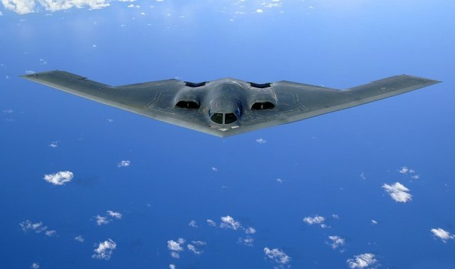
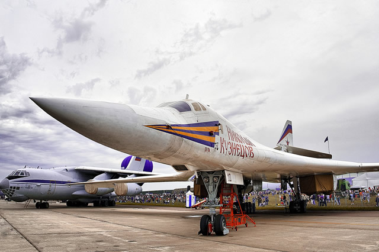
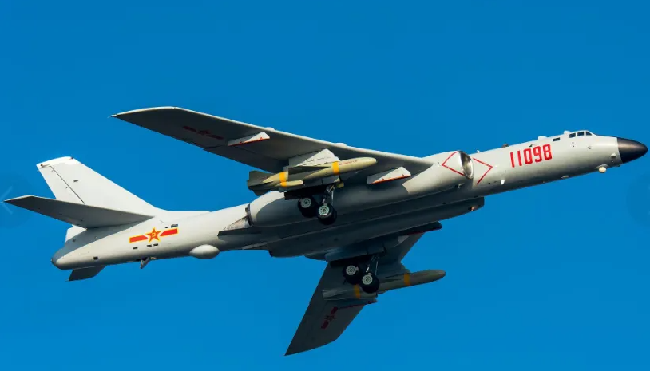
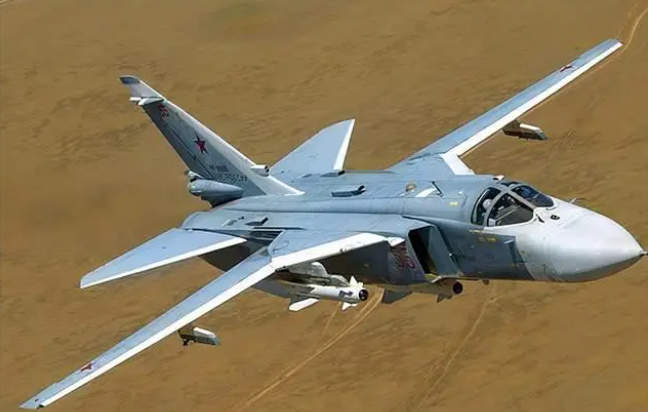

|
|
|
|
盘点一些世界著名的轰炸机
B-2轰炸机

B-2轰炸机（英文：B-2 Stealth and Strategic Bomber，绰号：Spirit，译文：幽灵，通称：诺斯罗普·格鲁门B-2隐形战略轰炸机），是由诺斯洛普（Northrop Grumman）和波音公司联合麻省理工学院为美国空军研制的执行战略核/常规打击任务的低可侦测性飞翼式轰炸机。B-2轰炸机是当今世界上唯一一种的隐身战略轰炸机，最主要的特点就是低可侦测性，即俗称的隐身能力。能够使它安全的穿过严密的防空系统进行攻击。
图-160战略轰炸机

图波列夫图-160是苏联图波列夫设计局（现俄罗斯联合航空制造集团）研制的超音速变后掠翼远程战略轰炸机，北约赋予的代号为海盗旗，同时其优雅的外形和俄罗斯空军的白色涂装使其也被赋予“白天鹅”的美称。图-160是世界上最大的轰炸机，同时也装备着世界上推力最强劲的军用航空发动机；图-160旨在替换图-22M轰炸机，并与美国空军的B-1轰炸机相抗衡，后起之秀的图-160速度比美国B-1轰炸机快80%，比B-1轰炸机大将近35%。图-160的航程比B-1轰炸机多出将近45%。
轰-6K型轰炸机

轰-6K型轰炸机是中远程轰炸机，是重要的空基远程打击力量，具备远距离奔袭、大区域巡逻、防区外打击能力。轰-6K轰炸机，在纪念中国人民抗日战争暨世界反法西斯战争胜利70周年阅兵式上首次亮相。轰-6K作为轰-6家族的大改型号，除了在气动设计、机载设备、航空发动机等方面进行全面升级，最主要的就是作为长剑-20空射巡航导弹的发射平台。
苏-24战斗轰炸机

苏-24战斗轰炸机（俄文：Су-24，英文：Su-24，北约代号：Fencer，中文：击剑手，通称：苏霍伊苏-24），1968年8月7日设计定型，1970年1月17日最后确定型首飞，1974年开始交付苏联空军，是苏联/俄罗斯一型全天候、超音速、变后掠翼双座双发战斗轰炸机，也是苏联第一种搭载数字化攻击瞄准/地形导航航电系统的飞机。该机型能携带8吨重的外挂载荷，包括空对空导弹、空地导弹、航空炸弹、火箭弹甚至核武器，具备强大的对地攻击轰炸和一定的空战格斗能力。
|
|
| |